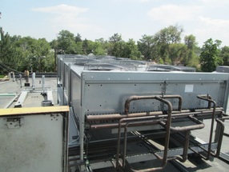
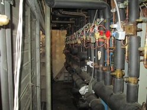
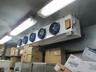
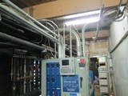
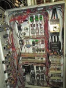
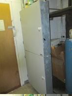
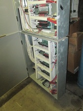

Refrigeration to IT
Goal:
Describe the basics of a commercial refrigeration system and the IT/controls that operate it.
*Please do not use as a technical design guideline.
Basic Refrigeration Cycle:
Overview:
Refrigerant is pumped throughout the system by the compressor, “A”. The compressor receives a Low Pressure Gas and compresses this gas to a High Pressure Gas. This creates a High Pressure, Hot, and a Low Pressure, Cold, side.
When the High Pressure Gas leaves the compressor, it moves to the Condenser, “B”. The condenser inlet separates the Hot Gas into many small pipes. Air is blown over these small pipes, cooling the gas. The gas will condensate to a liquid-gas mixture as it is cooled. By the time it leave to condenser, the refrigerant will be 100% liquid. The air is heated and the gas is cooled.
The liquid continues to flow to the Metering Device “C”.
The Metering Device is usually a valve, with a very small opening. This small opening restricts the liquid’s flow. The flow through this restriction causes a large change in pressure, High to Low. The Low pressure fluid enters the Evaporator, “D”.
The Evaporator is where the cooling takes place. Similar to the condenser, the evaporator consists of fans, which blow air over many pipes. However, the gas inside these pipes is now Cold. The air is cooled, and the gas is heated. Then the gas is sucked back into the compressor, “A”.
For the commercial system I have worked on the last few years; there are usually (3-5) Compressors, (1) Condenser, and (10-15) Subsystem Evaporators, in one system. And (2-6) systems at one site location.
COMPRESSORS:
Inputs: (To the controller)
Discharge Temperature (Analog Input)
Suction Temperature(Analog Input)
Discharge Pressure (Analog Input)
Compressor Proof (Digital Input)
Outputs: (From the controller)
Variable Speed Signal (Analog Output)
Compressor On/Off (Digital Output)
Control Strategy:
The controller will look at the Suction Temperature, and turn on/off compressors accordingly. Usually there is a “float set point” and a “rack setpoint”. The rack set point is what the design is based on, and what the controller will use as the default temperature setpoint. If all of the sub systems are meeting the required cooling, the float set point is used. This will slowly increase the rack setpoint, and check to make sure all sub systems are still meeting their individual setpoints. As the rack set point is able to rise, less energy is used to operate the system, saving money in the long run.
Discharge Pressure is used to calculate what the superheat is, compared to the discharge temperature. This data is used for the condensers control.
Compressor Proof is used to ensure that a compressor is ON if the controller is telling it to be ON. If it is not, an Alarm will be sent to the Building Controller.
Variable Speed Signal can be used on condenser fans or a compressor. This signal is sent to a VFD (Variable Frequency Drive), which can tell a motor (fan, compressor) to work at a specific frequency, or percentage.
CONDENSER:

Above: (8) Fans, blowing air down, over small pipes.
IO:
Fans (Digital Inputs)
OAT (Analog Input)
Outlet Pressure (Analog Input)
Control:
Each of the fans will be turned on/off as needed, dependent on the required rack cooling load, the condensers pressure, and Outdoor Air Temperature (OAT).
SUBSYSTEMS:

Above: (10-15) Evaporator subsystems (supply and return piping from compressors).
IO:
Valve’s “Open” when “OFF” (Digital Output)
Control:
Each sub systems has a unique temperature setpoint and defrost schedule. Depending on the actual temperature, and the defrost schedule, the controller will open and close the valves for each system as needed.
EVAPORATORS:

Cases (Top) - Walk-In Cooler (Bottom)
IO: Temperature (Analog Input)
Fans (Digital Output)
Defrost Heater (Digital Output)
A
temperature sensor is located at each evaporator, reporting
back to the controller what the current temperature is. These
are the temperature sensors that control the subsystems.
RACK CONTROL PANEL:
Outside:
The Main Controller for this Rack is shown on the front of this panel, with the black screen. There are also manual toggle switches on the left side, to override the controller.
Inside:

The main voltage supply comes into the rack here (Typically 460V). From the main voltage, the wiring is split up to each of the different components at the rack. The wiring for each component then goes to a relay. The relays open and close these high voltage electrical circuits, depending on the 24V signal sent from the controller.
IO PANELS:

Inside:

These are the boards with the Inputs/Outputs for compressor proof, compressor relays, condenser fans, sub system temperature, sub system defrost, etc. There are (6) boards shown in the photo above. Each of these boards is sending data back to the controller on the front of the Rack Control Panel. Data is received/sent via these boards, but the controller is actually processing the data and controlling these boards.
There are 4 types of IO; Analog Input, Analog Output, Digital Input, Digital Output.
MAIN RACK CONTROLLER
-The Main Controller is programmed with a manufacturer dependent’s Software
-Once the wiring is done, each of the Input/Outputs and their locations are programmed/defined in the controller.
-Each of these are then directed to the appropriate control strategy they are needed for.
-Each sub system, condenser, compressors, and the overall rack have a unique control strategy. All working together to ensure the overall system is operating correctly and efficiently.
SITE LOCATION
-The software on each of the Main Rack Controllers are connected together, and a Building Controller is also added/connected. The Building Controller is responsible for Lighting, Indoor Room Temperatures, and Humidity.
-Heat Reclaim can also be used to heat the water/air at a site location, using the heat rejected from the refrigerations racks. The control strategies for this are based on the same principles, and decreases heating costs for the building.
-Once all of the Main Rack Controllers/Building Controllers are connected together, they are connected to an access point at the site.
-I then login to a VPN on the clients Network, and use a specific private IP Address to access a specific site and then a specific controller from the controller software, which is in the controller, containing the NIC, with the MAC address, that is assigned to the IP address, within the virtual private network.
-From here, edits can be made, but usually only monitoring is used. If something needs to change, it is best to have a person on site in case a manual override is needed.